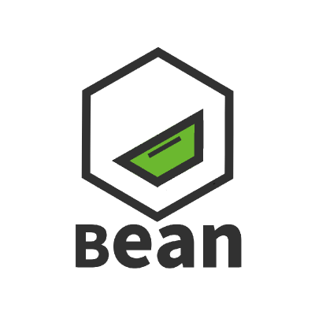

DOTORI
GSM 기숙사 관리 시스템
DoNote
간단한 메모 웹앱.Eliverd
Deliver Your Life, Eliverd.소상공인 결제/배달 시스템
Related Repos


SID
STARTERGATE IDENTITY통합 계정 서비스

Nyan ID
Oauth 2.0 계정 서비스Related Repos
HIVE
영화 정보 크롤링 사이트Related Repos
Lost
2D 플랫포머 게임Related Repos/Links
SteamBot
디스코드 스팀 크롤링 봇Related Repos

Cloudy
DB 필요없는 설치형 클라우드 드라이브 서비스Related Repos
Basterds: Hair Naked
타워 디펜스 게임2019 GSM Project Festival
DEEPendency
스팀 창작마당 아이템의 의존성 모듈들을 자동으로 설치합니다.Related Repos
The Intersection
GameLauncher is Game LauncherSTARTERGATE.CDN
개인 프로젝트를 위한 CDNRelated Repos
HakCam
학교 수업 실시간 스트리밍 서비스Related Repos
Problert
위치 기반 민원 접수 시스템Related Repos
Don't Afraid
트라우마 치료 게임Related Repos
Untitled Blockchain Project
실버 택배 블록체인 프로젝트Related Repos
MovieBot
디스코드 영화 정보 크롤링 봇Related Repos
Nearby
주변 정보 검색 페이지Related Repos
Not a NAVER News
뉴스 입력 프로그램Related Repos
BKNG
학원용 포인트 적립 시스템Related Repos